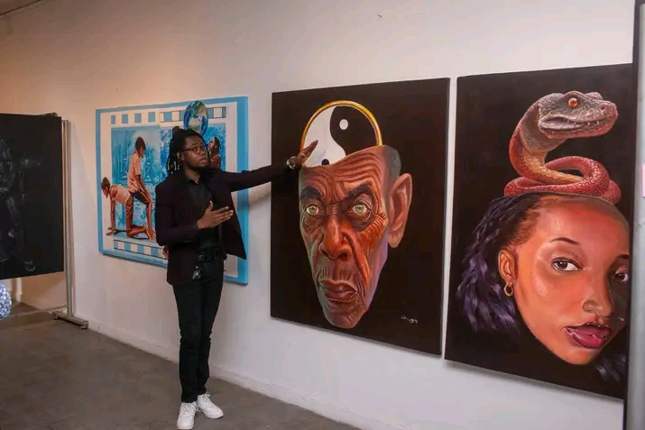
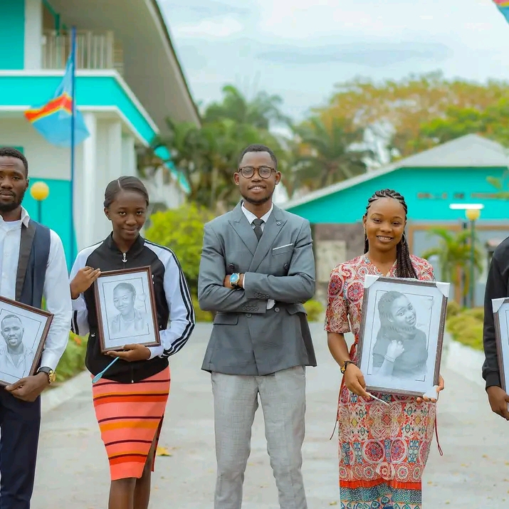
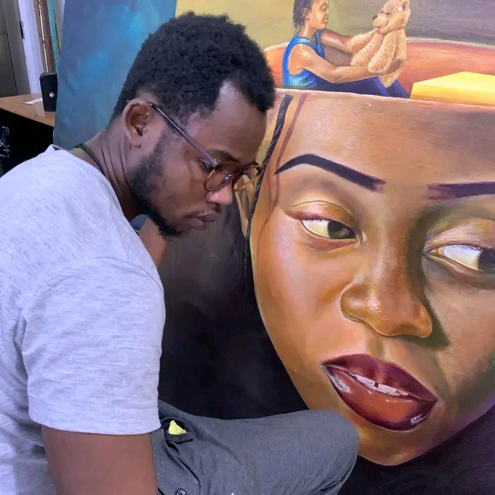

Bienvenue sur le site officiel de Mosala Nde Papa
"Vous satisfaire, c'est notre passion — Mosala Nde Papa."
À propos de l'artiste
Michel-Ange Bukasa, artiste peintre congolais et PDG de Mosala Nde Papa, a étudié à l’Académie des beaux-arts de Kinshasa, où il s’est distingué par son talent exceptionnel. Il crée des œuvres uniques — portraits en couleur ou en noir et blanc, sculptures, photographies artistiques — pour valoriser la culture, l'identité et le style.
Galerie d'œuvres



Commande & Contact
Envoyez-nous un message directement sur WhatsApp :
Commander via WhatsApp